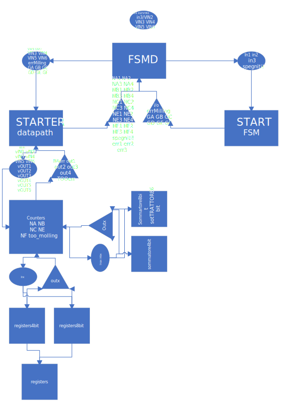
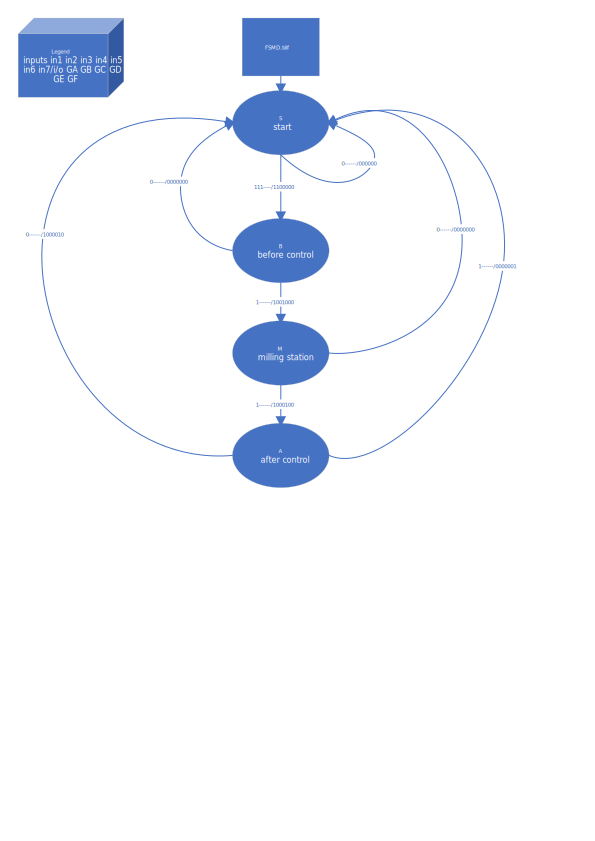

read README.blif first
The implementation of the machine control system had required four states, one undefined for the starting point of the machine and other three for each section. When turned on the machine require three consecutive bit T taken to the fsm, which will respond with the correct gates opening. The datapath analize gates and according to them will work on the correct registers.
Following a flow chart of each file with relative variables between them:
Following a state chart of states and and conditions:
Following a state chart of states and and conditions: